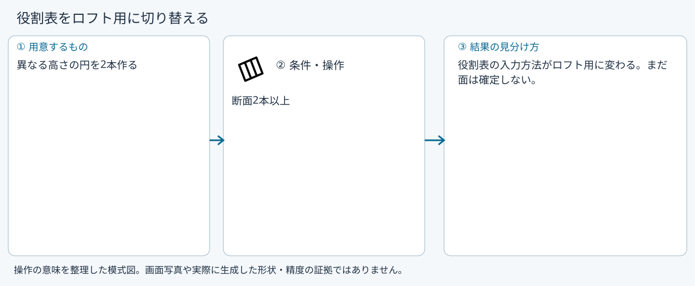
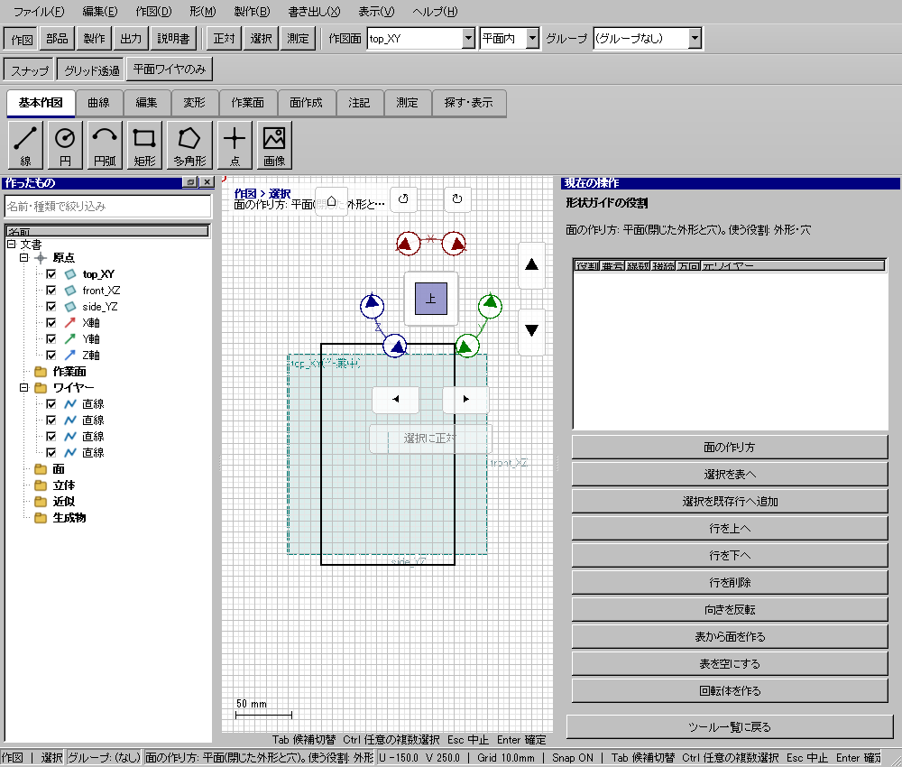

面の作り方
具体例: 役割表をロフト用に切り替える

準備
異なる高さの円を2本作る
操作手順
- 面の作り方を開く
- ロフトを選ぶ
設定: 断面2本以上
結果を確認
役割表の入力方法がロフト用に変わる。まだ面は確定しない。
取消・やり直し
ダイアログの取消、またはペインの取消を使います。即時操作には未確定段階がありません。 確定済みの文書変更はCtrl+Z、やり直しはCtrl+Yです。保存・書出し済みのファイルはUndoの対象ではありません。
進めない場合
面の作り方を7通りから選びます。使わない役割の行が残っていれば断ります。
対象欄と3Dの強調を照合し、必要な線・面・部品を各役割へ指定します。処理中は計算表示を確認し、取消が可能な処理は取消を使います。
Windows版の操作画面
